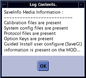

Operating Documentation
Direction 5440001-3, Rev# 6
Signa HDxt Service Methods
Module Version 3.0, Version Date 11/17/08
Operating Documentation |
| Required Persons | Preliminary Reqs | Procedure | Finalization |
|---|---|---|---|
| 1 | Not Applicable | 10 mins | Not Applicable |
Verify SaveInfo Data is used to verify content of SaveInfo media to the original data on the system disk drive. The program firsts checks that all files are present on the SaveInfo media and then if check sums match.
| Condition | Reference | Effectivity |
|---|---|---|
Software is running. | - | - |
Insert your already created SaveInfo MOD or DVD into the appropriate drive if it's not already there.
At the host computer, go to the Service Desktop and open the Service Browser if it's not already running and start the Guided Install tool in FE Mode, (see Step ).
Illustration 1: Starting Guided Install From The Service Browser

In Guided Install, go to the Save / Restore screen and start the verification process, (see Step ).
Illustration 2: Starting SaveInfo Verification

The tool will then ask with a popup which media is being used for SaveInfo. Answer appropriately, Step .
Illustration 3: Select SaveInfo Media
The tool will then begin the verification of the data on the media with that on the system hard drive. If no media is present, the user will receive a error message at this time. While the media is being checked, the popup shown in Step will be displayed on the screen. The run will take about 2 minutes.
Illustration 4: Verification Wait Screen.

Once verification is complete, the system will ask if you want to view the log. See . Click the [Yes] button, (see Step ).
Illustration 5:

A log will be shown that will list content found and it . See Step . If any errors are reported, it his highly suggested that a new SaveInfo be created.
Illustration 6: SaveInfo Verification Log

Store Save/Restore media in a safe place.
Do a test scan before customer turnover to ensure proper operation.